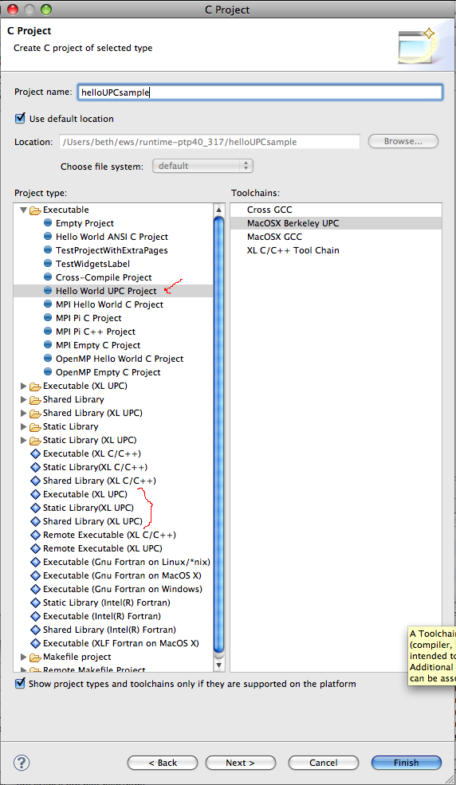

There are now at least two new project wizards and toolchains for using UPC that are (optional) features of CDT.
Since these are part of CDT, we only mention them briefly here.

Be sure the toolchain on the right side of the wizard selection page is used to select the correct toolchain for your platform.